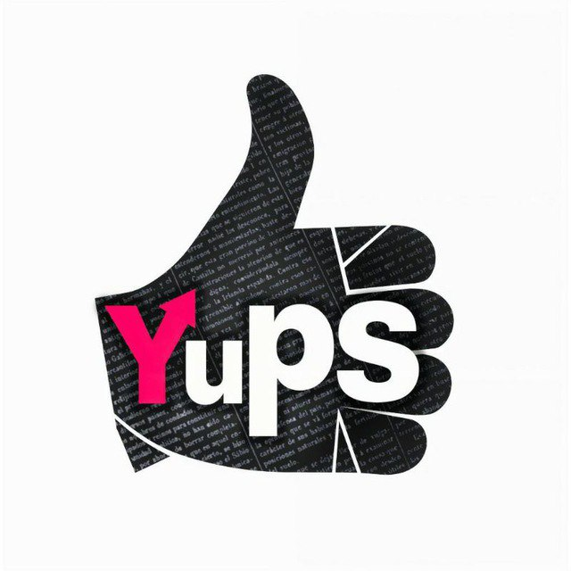

Te has topado con Yups! ¿Y qué es eso? Muy fácil. Es un nuevo agregador de noticias que está gestionado enteramente por sus usuarios.
De momento tenemos una versión pre-alfa donde vamos haciendo pruebas.
Si estás interesado puedes pasarte por el canal de Telegram en el que debatimos y coordinamos el trabajo, leer nuestra Wiki o si quieres meter baza en el diseño y su desarrollo no dudes en pasarte por nuestro servidor de Discord.